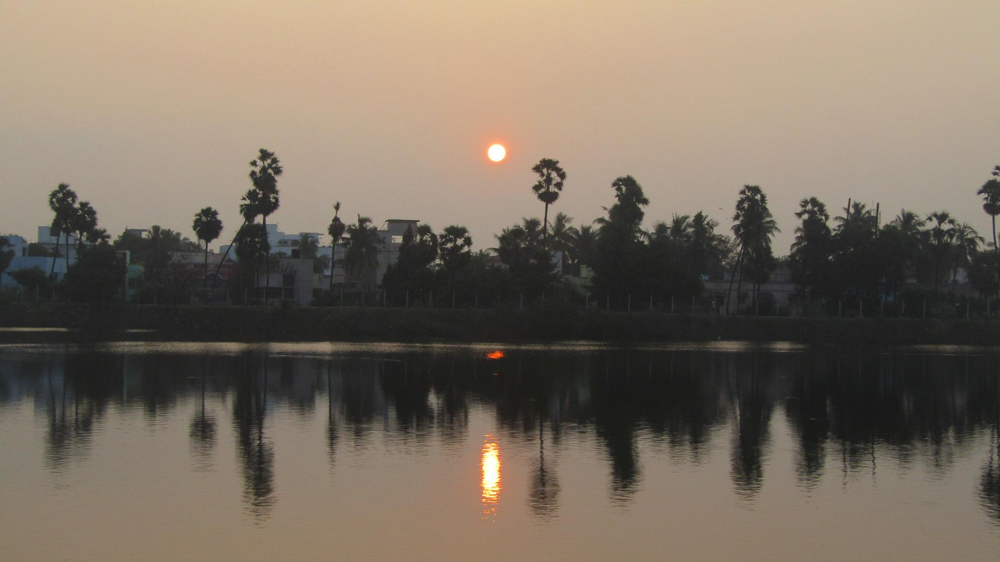

<BODY>
	
</BODY>

<UL >
This is one of the places to where my memories goes from childhood times. Now that the lake has been fenced and a pavement has been put around. 
The total circumferential distance is around 2.3 kilometres. At evenings the place is a bit crowded with people from all ages from school children to retired persons, congregate and socialise. 
Even small vendors are trying to utilise the scenario to increase the sales around the area and causing great disturbance to the joggers/runners.
The place is ideal for joggers and slow runners during evening up to 5:00 PM after which it becomes a hang out place. With Palm trees doted on one side where the elevation is higher, it is a scenic place to enjoy the evenings.
</UL>

<BODY>
<BODY>